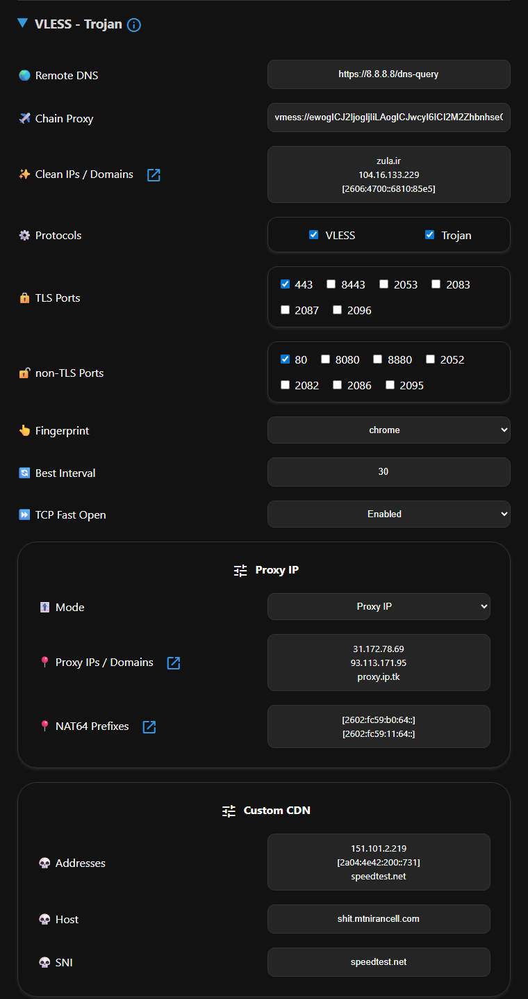

VLESS 和 Trojan 设置

远程 DNS (Remote DNS)
默认情况下，远程 DNS 使用 Google DNS over HTTPS (DoH)。不过，您也可以使用其他 DoH 或 DoT 服务器，但 Cloudflare DNS 服务器除外：
知名的 DOH 和 DOT 服务器
https://dns.google/dns-queryhttps://dns.adguard-dns.com/dns-queryhttps://dns.quad9.net/dns-querytls://dns.google
链式代理 (Chain Proxy)
如前所述，代理 IP 可以固定 Cloudflare 目标地址的 IP，但对于其他目标，节点 IP 可能会有所不同。链式代理可确保所有目标都具有一致的 IP。您可以在此处使用一个免费配置，即使它已被您的运营商屏蔽，也可以通过链式代理永久固定您的 IP。
支持的协议
- VLESS
- VMess
- Trojan
- Shadowsocks
- Socks
- Http
支持的传输方式
- TCP
- TCP http header (HTTP 伪装)
- Websocket
- GRPC
- Httpupgrade
支持的 TLS
- TLS
- Reality
注意
链式代理配置本身不能是 Worker，否则最终 IP 仍会改变。
信息
Socks 和 http 配置应包含用户名和密码，Xray 不支持不带认证的原始配置。
信息
Shadowsocks 不能包含任何传输方式（如 websocket, grpc...），也不能包含 TLS。
警告
带有 randomized（随机）ALPN 值的 VLESS、VMess 和 Trojan 配置与 Clash 不兼容，因为缺少指纹识别。
此设置适用于 Normal（普通）和 Fragment（分片）订阅。应用设置后，请更新订阅。链式配置将使用 🔗 图标添加到原始配置旁边。这样，当链式代理失效时，您仍然可以使用原始配置。
优选 IP/域名 (Clean IP/Domains)
对于非 Normal 订阅，您可能需要使用优选 IP。面板包含一个扫描器，可针对您的操作系统下载 zip 文件。运行 CloudflareScanner，结果将保存在 result.csv 中，您可以根据延迟和下载速度选择 IP。推荐在 Windows 上进行此操作，并确保在测试期间断开 VPN。有关高级扫描，请参考此指南。
针对中国用户的提示
在支持 IPv6 的运营商网络下，请在您的设备/SIM 卡上启用 IPv6，在客户端设置中激活 Prefer IPv6（优先使用 IPv6）选项，并使用默认配置。IPv6 IP 通常表现更好。
提示
使用 Fragment 时，优选 IP 的作用不那么显著，但某些运营商仍可能需要它们。
要将自定义配置与默认配置一起添加，请按照该部分图片所示输入优选 IP 或域名，然后点击 Apply（应用）。更新订阅后将导入这些新配置，它们也会被添加到 Best Ping 和 Best Fragment 配置中。
协议选择
启用 VLESS 和 Trojan 协议中的一种或两种。
端口选择
选择所需的端口。TLS 端口提供的配置更安全，但在 TLS 受到干扰或 Fragment 表现不佳时，非 TLS 端口可以作为一个可行的替代方案。
注意
非 TLS 配置需要通过 Workers 方式部署面板。如果您使用 Pages 方式或设置了自定义域名，HTTP 端口将不会出现在面板中。
信息
非 TLS 配置仅被添加到 Normal（普通）订阅中。
指纹 (Fingerprint)
您可以在此处选择 TLS 指纹，默认为 randomized（随机）。
最佳间隔 (Best Interval)
默认情况下，Best（最佳）配置每 30 秒测试一次，以识别最优配置或分片值。对于低速网络，在进行视频串流或游戏时，这可能会导致卡顿。您可以根据需要在 10 到 90 秒之间调整间隔。
TCP 快速打开 (TCP Fast Open)
如果您的设备支持 TCP Fast Open (TFO) 且您的运营商不对此进行干扰，您可以启用此功能以增强连接。请注意，Linux 用户需要先在系统中启用 TFO 才能激活此功能。
代理 IP (Proxy IP)
模式 (Mode)
从 3.4.2 版本开始，您可以选择使用代理 IP 或 NAT64 前缀来连接 Cloudflare CDN 地址。
代理 IP / 域名
您可以通过面板应用更改并更新订阅来更改代理 IP。但是，建议通过 Cloudflare 控制面板设置或使用向导设置，因为：
注意
通过面板更改代理 IP 后，如果 IP 失效，需要更新订阅。这可能会干扰通过捐赠获得的配置，因为没有活动订阅的用户无法更新。本方法仅限个人使用。其他方法不需要更新订阅。
从这里选择一个代理 IP，该链接按地区和运营商列出了 IP。
信息
要使用多个代理 IP，请分行输入。
NAT64 前缀
您可以通过面板切换代理 IP 模式并填写 NAT64 前缀，然后应用更改并更新订阅。但是，建议通过 Cloudflare 控制面板设置或使用向导设置，因为：
注意
通过面板更改 NAT64 前缀后，如果 IP 失效，需要更新订阅。本方法仅限个人使用。
您可以在这里找到可用的 NAT64 前缀。
信息
要使用多个前缀，请分行输入。
自定义 CDN (Custom CDN)
使用自定义 CDN（如 Fastly、Gcore）来掩盖您的 Worker 域名。配置以下三个部分：
地址 (Addresses)
这些是该 CDN 特有的 IP 或优选 IP。您必须使用 CDN 自己的 IP，而不是 Cloudflare 的。按要求输入域名、IPv4 或 IPv6 地址，IPv6 地址需用方括号括起来，例如 [2a04:4e42:200::731]。
主机名 (Host)
在 CDN 中定义的指向您 Worker 的主机，例如 Fastly 中的虚假域名。
SNI
该 CDN 上的虚假域名或站点，例如 Fastly 的 speedtest.net（不带 www）。
配置这些字段后，相关配置将被添加到 Normal 订阅中，并带有 C 标志以示区别。
信息
这些配置仅支持 443 和 80 端口。